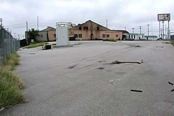
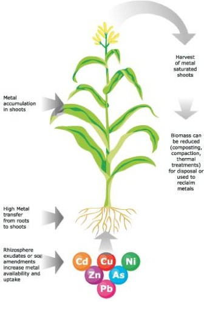

Overview
Bioremediation is the manipulation and use of biological processes to help alleviate or dispose contaminants in the environment. This field has shown great success for both organic and inorganic wastes. Phytoremediation in particular is the use of plants to reclaim polluted land. The use of phytoremediation for the cleanup of heavy metals provides a clever alternative to the labor intensive and economically demanding methods of contamination removal and stabilization currently employed as standard practice.
Problem and Source
In the United States alone there is a daunting amount of sites that need intervention from the buildup of contamination. Since the Industrial Revolution, the accumulation of heavy metals has occurred through agriculture, mining, smelting, and electroplating (1). Additionally with the discovery of nuclear energy and weapons another source of toxic metals was introduced into the environment. The heavy metals most often listed as contaminants are: Arsenic, Cadmium, Chromium, Copper, Lead, Mercury, Molybdenum, Nickel, Zinc, Uranium, Cesium137, Strontium90. The EPA has listed several Superfund sites throughout the U.S. that are the nation's worst toxic waste sites. There are 1305 sites scheduled for cleanup on the National Priorities List. About 11 million people in the U.S., including 3-4 million children, live within 1 mile of a federal Superfund site and confront potential public health risks (2). In addition to the most severe sites, there are also the sites managed by the RCRA which handle the storage and disposal of toxic wastes, there are also sites listed by the DOE, DOD, as well as state sites and the private sector. The majority of these areas have a mixed contamination of both heavy metals and organics although some are strictly contaminated with metals. In 1993 a 5 year estimate for the remediation of all these sites totaled $35.4 billion and $7.1 billion for mixed and heavy metal contamination.

{kind=link}

{kind=link}
Clean-Up
The two most often employed techniques for soil clean-up are soil excavation followed by a washing for disposal at a landfill or soil capping, either by asphalt or soil. The former is used for the restoration of an area where removal of the contaminant is desired whereas the latter is used merely to stabilize the area and prevent physical contact to the tainted soil. As to groundwater contamination, the most commonly employed method is called “pump and treat” where the groundwater is pumped to the surface cleaned by conventional water treatment and then returned to the environment. (1)

{kind=link}
Types of Phytoremediation
There are several distinct flavors of phytoremediation depending on the intended use for the land, the extent and type of the contamination, location, soil characteristics, etc. (1). There is phytoextraction, phytostabilization, phytofiltration, and phytovolatization each one best suited for a certain domain. Phytoextraction is an alternative to the soil excavation and washing where the land is intended to be reclaimed for later use and the goal is to remove the metals from the soil. The plants in this case are hyper-accumulators of the metal to be removed, that is they uptake and store more metal than is normally seen in plants. These types of plants are naturally occurring and have arisen in highly metallic soil because of the evolutionary advantage offered from being poisonous to other organisms. To be most effective these plants must intake metals easily and quickly but at the same time being tolerant and produce a high amount of biomass. This is important so that more metal can be placed into the plant and ultimately removed in the harvest. Often soil amendments such chelation agents, such as EDTA are used to facilitate metal soluble and transport (2).

{kind=link}
Phytostabilization is the use of plants to stabilize the area and soil rather than remove metals. The plant characteristics in this formation are precisely the opposite of that in phytoextraction in that little uptake is desired. The plants do not actually play any chemical role in stabilizing the area but rather provide a physical barrier to human and animal contact as well as providing percolation prevention of the metals. The stabilization is chemically induced by soil amendments which help precipitate and make insoluble the metals in the soil (3).

Popular Trees and Phytostabilization
Phytofiltration is the filtering and cleaning of water using plants. These systems take benefit of the same hyperaccumulating plants that phytoextraction does however it is not important that transportation to the above ground biomass take place, or that there is sufficient biomass. In phytofiltration, it is only important that the metal contaminant be sorbed by the roots, because the clean water is being removed from the system rather than the plants (4). It is worth noting here that phytoextraction and phytofiltration both employ the same methods to both accumulate and detoxify the abundance of metals they encounter and that is by a combination of metallothioneins and phytochelatins. These are proteins that handle the task of coordinating and detoxifying these metals for transport and compartmentalization, both in tissue and in cells. Only few of these proteins have been explicitly found leaving a wide area of research for more efficiency and refinement of the phytoremediation process (5).

Sunflower Phytofiltration System
{kind=link}

{kind=link}
Phytovolatization is a unique method of dealing with metals that have a gaseous form such as mercury or selenium. For mercury in particular, some bacteria have devised ways of dealing with the toxic element by cleaving the methyl group from it that is present in nature and reducing the element from Hg+ to Hg(0) or elemental mercury. Fortunately, elemental mercury is a gas so it quickly and easily volatizes from the bacteria. These genes denoted mer genes have been found and transfected into certain plant species allowing them to volatize mercury as well. This sort of remediation shows the future of the technology where the specific attributes of these organisms are exploited in precisely the manner that is required (6).

Conclusion
Phytoremediation provides many benefits to the traditional approach of contaminated land remediation such as lowered cost, maintenance, exposure to workers, and in generally more aesthetically pleasing. The major drawback to almost to any of the methods is of course that of time and inability to handle a diverse and very large amount of contamination. As the technology is better understood and further implemented, however, it will grow in its efficiency and ability and will no doubt grow.
References
(1) Glass, David J. Economic Potential of Phytoremediation
(2) Superfund (2007).
(3) Blaylock, Michael J. et. al. Phytoextraction of Metals.
(4) Berti, William R. Phytostabalization of Metals.
(5) Dushenkov, Slavik Phytofiltration of Metals.
(6) Rugh, Clayton L. Phytoreduction of Environmental Mercury Pollution.
(7) Cobbett, Christopher S. Mechanisms of Metal Resistance: Phytochelatins and Metallothioneins.
Author: Noah Manson Prescott
- Alzheimer's 1 2
- Antibiotics
- Antifouling Paint
- Arthritis
- Ayurvedic Medicine
- Breast Feeding
- Cancer Therapy
- Cattle Feed
- Cerebral Ischemia
- Chelation Therapy
- Chernobyl
- Chicken Feed
- Chocolate
- Cigarettes
- Coal 1 2
- Copper Mining
- Cremation
- Diabetes
- Electronic Waste
- Hat Making
- Hard Metal Disease
- Hybrid Cars
- Imaging 1 2 3 4
- Industrial Pollution
- Jewelry Allergy
- Lead Poisoning
- Lewisite
- Magnetic Particles
- Makeup
- Mountain Top Removal
- MRI Imaging
- Neurotoxicity
- Nuclear Power
- Nuclear Weapons
- Ouch Ouch Disease
- Peripheral Neuropathy
- PET Imaging
- Photodynamic Therapy
- Phytoremediation
- Pregnancy
- Radioactivity 1 2
- Seafood
- Sunscreens
- Tattoos
- Vaccines
- Wound Healing